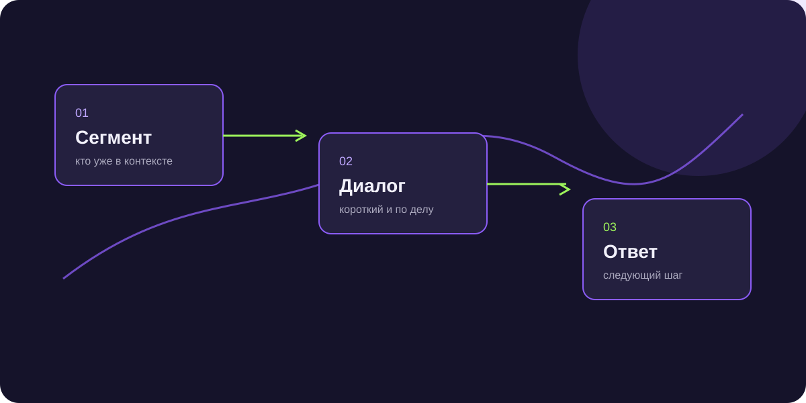

Email-рассылка клиентам: как использовать её для продаж
Email-рассылка клиентам работает, когда письмо продолжает знакомый контекст. Одинаковое предложение для всей базы быстро превращается в шум.

Короткий ответ
Перед отправкой разделите базу по ситуации, сформулируйте одну цель письма и оставьте простой следующий шаг: ответ, запись, расчёт или переход.
Сегментируйте базу
Действующие клиенты, старые контакты, лиды без сделки и партнёры ждут разного сообщения. Сегмент должен влиять на тему и предложение.
Одна цель письма
Письмо может вернуть к диалогу, предложить новый продукт, напомнить о сроке или пригласить на консультацию. Несколько равных CTA рассеивают внимание.
Смотрите дальше открытия
Открытие письма полезно для диагностики, но продажи показывают ответы, переходы, встречи и сделки. Сравнивайте сегменты, а не только общий процент.